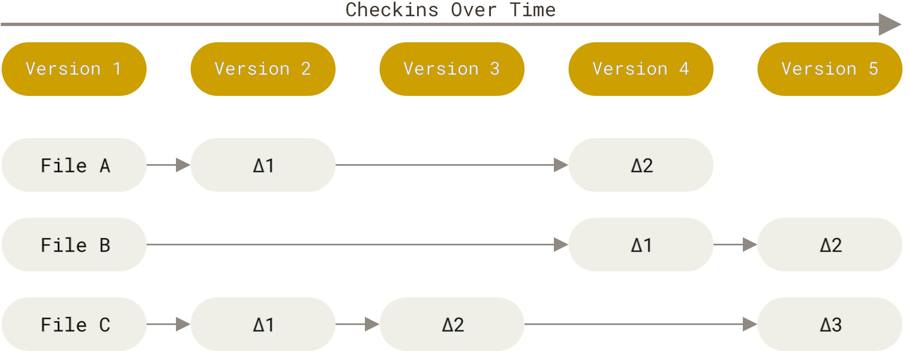
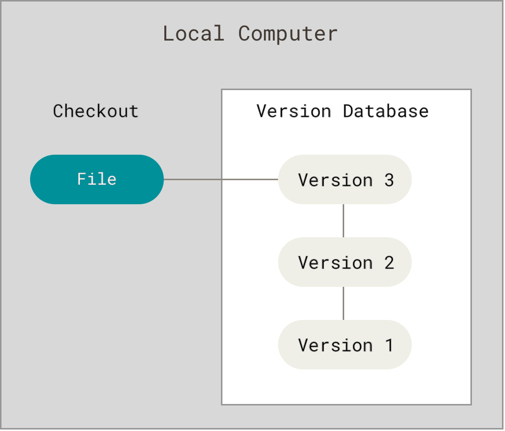
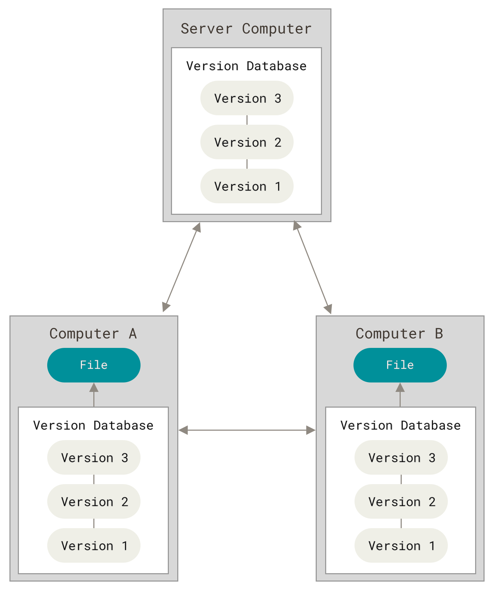
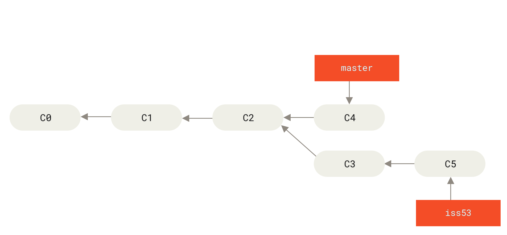
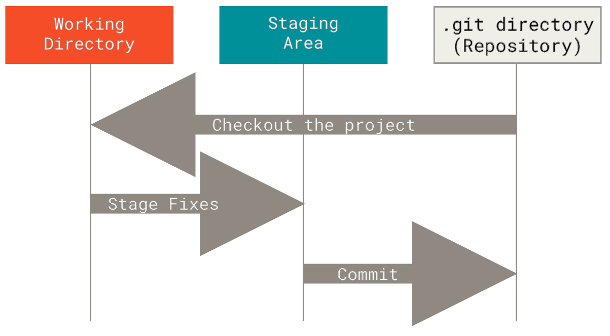

Working with Git and GitHub
Learning objectives
Topics
the versioning of documents and source code
- track/review progress and collaboration
Git concepts
- version, repository, clone, commit, push, pull
GitHub: Git + Hub
Installing the Git client
The everyday commands to synchronise a local copy with GitHub
Official Hello World tutorial
Versioning documents
Concept: version
a saved state of a document/folder which
- is part of a long-term project
- has a name and a specific footprint somewhere
Everybody does it by hand:
thesis.docx, thesis_v2.docx, thesis_final.docx, thesis_final_REALLY.docx
Issues with manual file-name versioning
- which one is current? On which folder is it?
- Ok, but what changed?
- On which computer/cloud/USB pen is the last version?
- it’s bad, I want to go back
- I accidentally deleted a good sentence/code
- the code doesn’t work anymore, I want to go back!
- who changed it?
- Oh no, Stelios overwrote my fantastic solution
Version control system (VCS)
Software that records the history of a set of files:
- every saved state, with who, when and why
- comparison between states
- return to any earlier state
Works best on plain text (.py, .qmd, .html, .css): changes can be compared line by line
Git
an open protocol that is implemented by several VCS
Focus on coding, alone, on one computer, on a long project (Linux OS)
Extends to general editing (thesis), collaborative, distributed
Underpins Cloud versioning (MS OneDrive, Dropbox, PCloud, Google Drive)
Storing versions: deltas
Classic VCS store, for each file, the list of changes over a base version

(all images from git-scm.com/book)
Collaborative coding
two or more edit the same files at the same time
destructive save: the last save may overwrite all previous saves:
- a conflict to avoid losing previous work
- won’t allow Stelios to overwrite my fantastic code
tracking changes and responsibilities
testing ideas on shared files without compromising them
Git: Centralised versus distributed
Centralised: one server holds the history

Local only: history on one machine

Distributed Git
Every collaborator holds a full copy of the history

Git concepts
Concept: repository
a folder of files plus its complete history, stored in a hidden .git folder
Two flavours of the same repository:
- local: on your computer
- remote: on a server (e.g., GitHub), by convention named
origin
Concept: commit
a saved snapshot of the whole project at a moment in time
Each commit has:
- a unique id (a hash, e.g.
a1b2c3d) - an author and a date
- a message saying what and why
- a pointer to the previous commit(s)
Snapshots vs. deltas
Each commit records what all files look like; unchanged files are just linked

Git history
a chain of commits
each commits points back to its parent; a branch is a movable label on a commit

Git Staging
within a directory, not all files need versioning, e.g., thesis.pdf
- working directory: the files you edit
- staging area: what goes into the next commit
- repository: the committed history

| Term | Meaning |
|---|---|
| clone | copy a remote repo, with its history, here |
| commit | save a snapshot in the local repository |
| push | send your new commits to the remote |
| fetch | download new remote commits, without merging |
| pull | fetch + merge into your current branch |
Commit is local: nobody sees it until you push
Getting started
Install: Win
Open a terminal or a PowerShell in administrator mode
Install: MacOs
Open a terminal
Get a fresh copy of the repository
From the folder where you want to save your copy of the repo
Update your copy of the repository
inside the folder where you want to save your copy of the repo
Check whether you changed local files
No change will affect the copy on github.com, for the moment
Discretionary: first-time configuration
Same on both systems; your name and email will label every commit
Working with GitHub
Start of the day
Open the folder that is versioned on GH
Spin up a terminal that works there
Win:
MacOS:
Get in synch with the project
What did we do yesterday?
Update your copy of the repo to that on GH
Save your work into the project
Issues
Several things can go wrong, when the code base changes quickly
OK, stash my changes away in a safe place
Pull in the new version from GH
Put my changes back in